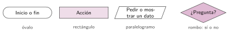
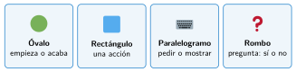

Diagramas de flujo
🤔 Pienso5 min
Qué hago aquí: Piensa un momento y contesta con lo que ya sabes. No pasa nada si no lo sabes: es para empezar.
Suena el despertador. ¿Qué haces si es día de clase? ¿Y si es sábado?
📖 Leo y aprendo15 min
Qué hago aquí: Lee despacio, mira los dibujos y los ejemplos, y quédate con la idea clave del final.
Un algoritmo se puede dibujar. Ese dibujo es un diagrama de flujo. Cada paso va dentro de un símbolo. Las flechas marcan el orden.


✏️ Hago25 min
Qué hago aquí: Haz las actividades en orden. Empieza siempre por las básicas.
Escribe el nombre de cada símbolo: óvalo, rectángulo, paralelogramo o rombo.
- Inicio:
- ¿Llueve?:
- Pedir la edad:
- Sumar un punto:
Mira el diagrama del paraguas. ¿Qué haces si no llueve?
Dibuja el diagrama del despertador de Pienso.
Dibuja el diagrama de una máquina de refrescos: pide una moneda; si es de 1 euro, da el refresco; si no, devuelve la moneda.
🚀 Amplío (si quieres saber más)
Qué hago aquí: ¿Has terminado? Lee la curiosidad o elige el reto. Es voluntario.
Dibuja el diagrama de un juego de adivinar un número del 1 al 10. Si fallas, vuelves a intentarlo. Pista: una flecha puede volver hacia arriba.
✅ Compruebo5 min
Qué hago aquí: Contesta sin mirar la ficha y marca cómo lo llevas.